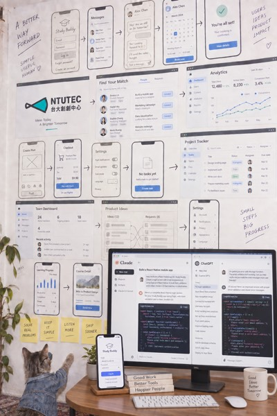
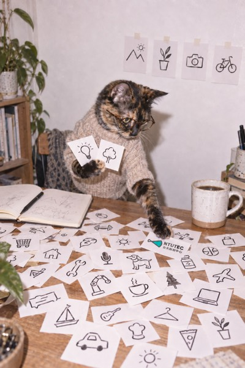
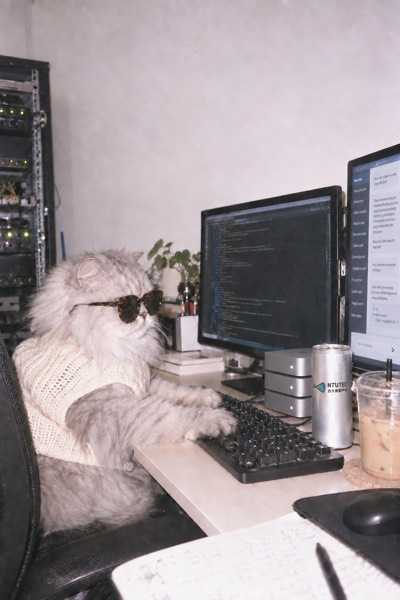

NTU Garage operations dashboard + office-hours tools Running
Our team uses it to track NTU Garage's coaching progress, consultation records and next steps, and to run registration, follow-up, KPIs and rosters: 15 courses and group consultations so far, for 42 teams and 68 people across Garage and our accelerator. Nobody assigned it; I started it myself, and I'm its only developer.
In September I opened 創創相談室, free monthly founder office hours, so we could meet founders before they apply. For the first time in NTUTEC's 13 years, our space was open to anyone: no company, deck or NTU affiliation needed. 60 signed up for the first session, from a high-school student to a PhD researcher, and 38 came. At the second, in October, 7 of the 32 attendees were returning; 63 people have checked in across both.
How its check-in came together:
- 23:39The night before: first commit, with QR check-in and a live back-office board
- 01:01A confirmation step so nobody checks in as the wrong person
- 13:53Event day: prompt to pick up one of 15 topic cards by project field
- 18:50Event day: a feedback form linked to each check-in
- Next day36 more commits: cross-session profiles (with consent) of visitors' stage, field, problems, feedback, return visits and NTU Garage eligibility
Session 2 (Oct 19):
- MorningA live board where attendees post what they're looking for (a co-founder, product testers) to the big screen, plus a question box the host brings to the room
- DesignI kept requests for help off the public board. They go to the question box: the big screen shows only the question, while the host's back office shows who asked
- 14:00In use at the session: 11 of the 32 attendees posted, 12 times in all
- Oct 21Matched attendees against our 2027 interest registrations, by email and then by name, because people sometimes use a different email on each form; name-only matches are flagged for staff to confirm. 13 of the 65 people who registered came to office hours first
- 436 commits
- 18 test files
- CI
1 · Phone
2 · Big screen
3 · Host view


